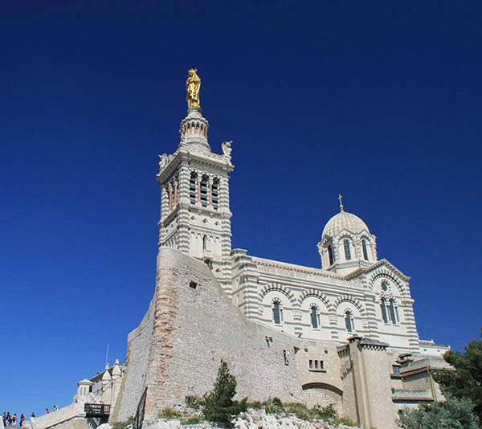
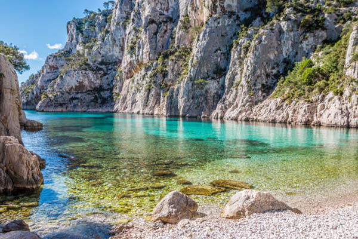
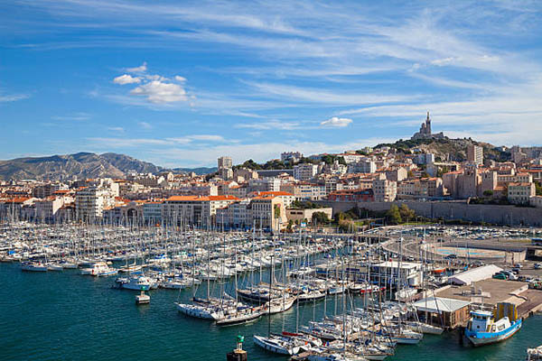
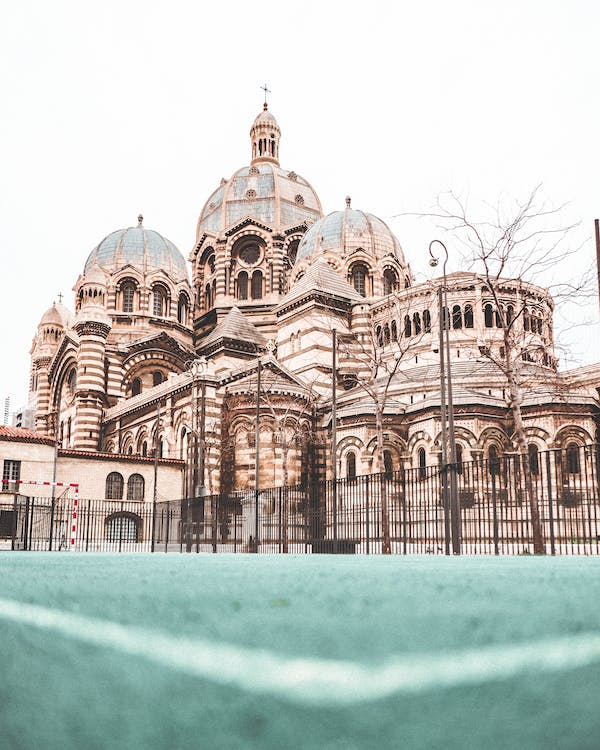
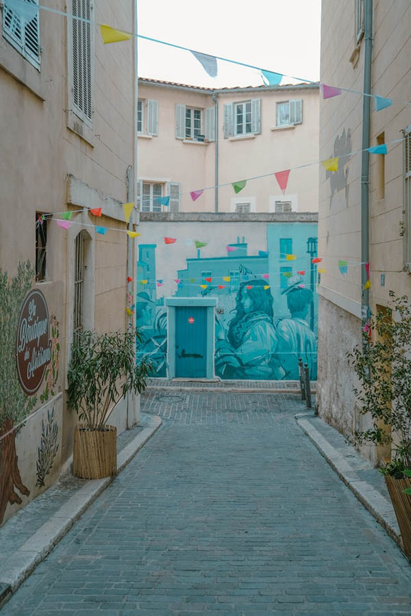

Numbers
Population :
870 731 inhabitants
3 618,7 inhabitants/km²
+0.3 % annually
412 216 : male
458 515 : female
213 265 : 0 to 19 y.o
490 481 : 20 to 64 y.o
166 985 : over 65y.o

Notre Dame de la Garde
Notre-Dame de la Garde (Our Lady of the Guard) is a Catholic basilica and the city's best-known symbol. Built in 1864 and the site of a popular Assumption Day pilgrimage, it is the most visited site in Marseille. It was built on the foundations of an ancient fort at the highest natural point in Marseille, a 149 m (489 ft) limestone outcropping on the south side of the Old Port of Marseille.

Calanques
A series of limestone cliffs and hidden beaches, pristine blue/green waters and incredible views of the Mediterranean sea.

Vieux Port
The Port, which was once teeming with commercial and military ships, protected by two forts, is now beautifully colored in white by the numerous boats filling it.

Notre Dame de la Major
Byzantine style cathedral built between 1852 and 1893, a landmark with its green and white horizontal striped stone facade on the exterior of the building, located along the waterfront of the city.

Panier neighborhood
Old working area of Marseille that is being rejuvenated and is now home to the arts and crafts of Marseille, with lots of murals and street art.